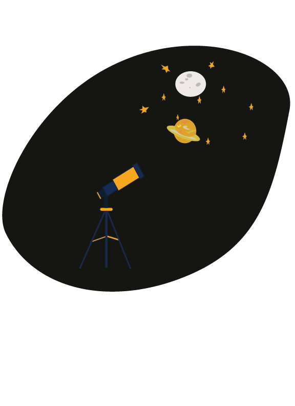

For this project I wanted it to appeal to all ages but be more geared towards kids. The Southworth planetarium has a lot of events for kids so I wanted to include elements that younger children could recognize easily. My design includes a design of the moon and saturn as well as some stars. I did not want my design to be too busy because I feel like that can be very overwhelming and confusing for viewers. The last thing I wanted my design to do was be multi purpose. I wanted the design to be easily manipulated and usable for different purposes like brochures, stickers etc.
Here is a link to my design through Google Drive
Logo DesignI will be creating a dystopian scene with various images of current social issues and events that have been happening in the US specifically to point out how close we are to falling into a dystopian society with the current administration under Donald Trump. I focused on he "no kings protests that have been happening all around the country, and took some images I found online of officers who were at these protests. The reality of this piece is that this could have been one photo, not multiple. I believe that speaks volumes as to what is happening in our country and our world.
Below is my final photo manipulation design

Below is a link to my photo manipulation in Google Drive/p> Photo Manipulation design